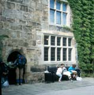

We started off steeply uphill, to the hilltop called Moelydd. We enjoyed the views in all directions, and wondered about a cloud with rain visibly coming down from it. Thann thought it was going a different direction. I thought it was coming our way, and put on my jacket. Fortunately, he was right! The path then went through many farms. In one farm field we saw a very young lamb, still with its umbilical cord attached. It seemed to be unhappy, and came to us for help. Its mother started to come over, and the lamb ran away. We decided we were causing problems, so went on. We soon saw the farmer, and told him about the situation. He said the lamb had been born the day before, and joked about the problems of lambs, and how he didn't want them but that's what happens when you have loose women and a tup jumps the fence. But he laughed and said he'd go check on them.
It was Spring Bank Holiday Monday and a beautiful day, so everyone was out. In Trefonen there was a road race. We chatted with a fellow who was standing and waiting for the first runners, who were about to appear, he thought. We went on, and soon were behind several groups of walkers, all going our direction. After a bit we realized (from signs along the way) that they were doing a "charity walk" for some Good Cause (money for education in some third world country, I think it was). For a couple of miles we were mixed up with these groups of cheerful unhurried walkers. We went down past an old mill at Llanforda, then up through Craig Forda Woods, and then through the "Old Race Course" on top the hill - now a common area for grazing. In rough grass just after this, we saw a mother pheasant with her family. She was very worried by our presence, making lots of noise and running around, trying to gather up her chicks. On Selattyn Hill we met a couple of women whom we would see for the next few days. They were school teachers (one retired), using the holiday week to do the last third of the Offa's Dyke Path. They had done the previous thirds on holidays in other years.
The path continued to be pleasant, as we walked over hills and down green lanes, finally seeing Chirk Castle on a hilltop ahead. Our goal was to get there before 4:30, because that was the last time for entry into the castle. Our host that morning in Nantmawr had told us about other guests of theirs who had taken too long to get to Chirk, arriving after 5. What we really wanted, though, was to get to the Tea Room before it closed! Fortunately we were there before 4, and had a wonderful tea with several big, rich, delicious scones and cakes for each of us. We came out of the tea room, which was in the bottom of one of the towers of the castle, into the castle courtyard. Thann spotted a doorway where they were selling ice cream cones, and had to have one!
We went out to the gardens, for which Chirk is most well known. The first thing one sees is a large garden of trimmed boxwoods. We went through that, and into the formal flower gardens, and enjoyed our unhurried wandering.
|  |
After we walked out the castle drive to the small road that we were to walk on next, we stopped to put down our packs and take off our jackets. We were on the grassy area beside the road, which at that point had a sharp bend. We didn't pay much attention when we heard a car approaching the curve too fast. But we did pay attention when the car flew off the road and onto the grass beside us! Some startled (and shocked) teenagers turned and looked at us out of the back window, and then the car roared off again.
Not long before the end of our day's walk, our books told us that we were seeing the last of Offa's Dyke itself. We were sad; we had become quite attached to it! This final piece of it was appropriately topped by an oak and a hawthorn.
We stayed at Sun Cottage, in Pentre. This is a very interesting house, which had been an inn in the 17th century - possibly earlier. Brenda and Joe were very kind hosts. Maybe we should have said "no, thanks" to the tea, since we had had a lot of it already at Chirk. (I did in fact have trouble getting to sleep, an atypical occurence on the walk.) Joe drove us to the club house at the local golf course for our dinner; he always does this for his guests since their village pub has closed. We walked back afterwards, mostly along the canal towpath.
| Previous Day | Next Day | Home Page |